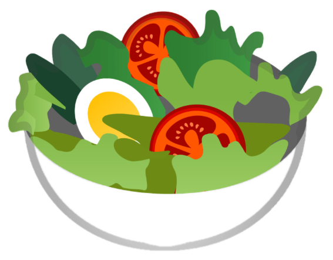
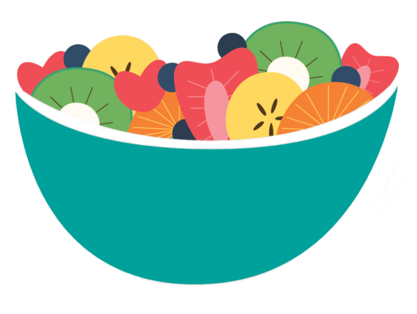
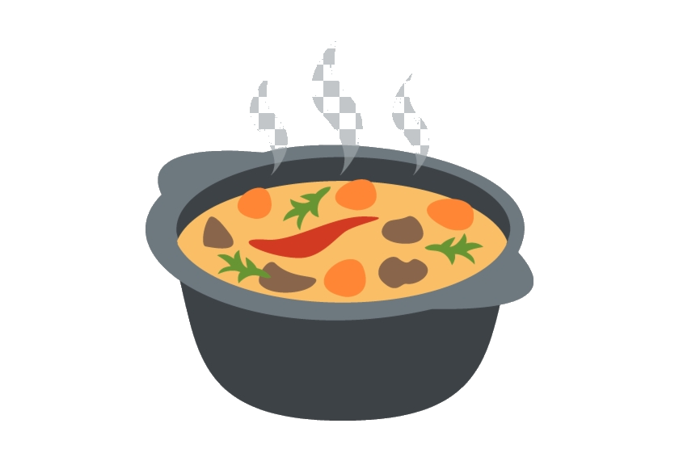

Comer bem é mais fácil do que parece!
Receitas saudáveis, práticas e gostosas para o seu dia a dia. Sem complicação, com muito sabor.
Café da manhã
Almoço
Lanche
Jantar SobremesaReceitas em destaque
Paqueca de banana e aveia Wrap de frango
Wrap de frango
 Sorvete zero açúcar
Sorvete zero açúcar
 Salada de grão de bico
Salada de grão de bico

Dicas e artigos recentes
Alimentação
Dieta low carbA dieta low carb realmete é a melhor opção para quem quer emagrecer?
Planejamento
Treino e dietaÉ possível conciliar dieta e teino na sua rotina!
Bem-estar
NutriçãoAprenda a combinar macronutrientes de forma simples e prática no dia a dia.